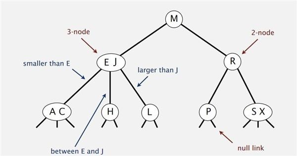

第一种解法
function findParentNode($nodes, $id)
{
foreach ($nodes as $node) {
if (in_array($id, $node['childrens'])) {
return $node;
}
}
return false;
}
function minimum2($nodes, $from, $to)
{
$fromToTop = array($from);
while ($parentNode = findParentNode($nodes, $from)) {
$fromToTop[] = $parentNode['id'];
$from = $parentNode['id'];
}
$toToTop = array($to);
while ($parentNode = findParentNode($nodes, $to)) {
$fromToTop[] = $parentNode['id'];
$to = $parentNode['id'];
}
$path = false;
$fromPath = array();
$toPath = array();
$countf = count($fromToTop);
$countt = count($toToTop);
for ($i=0; $i < $countf; $i++) {
$fromPath[] = $fromToTop[$i];
for ($j=0; $j < $countt; $j++) {
$toPath[] = $toToTop[$j];
if ($fromToTop[$i] == $toToTop[$j]) {
// 共同点。
// 去掉一个共同点
array_pop($fromPath);
$path = implode('=>', $fromPath) . '=>' . implode('=>', $toPath);
break 2;
}
}
$toPath = array();
}
return $path;
}
第二种解法
function findParentNode($nodes, $id)
{
foreach ($nodes as $node) {
if (in_array($id, $node['childrens'])) {
return $node;
}
}
return false;
}
function minimum($nodes, $from, $to, $path = '', $tryParent = true)
{
static $finds = array();
static $excludeIds = array();
if ($from == $to) {
$path = $path . $from;
$finds[] = $path;
return $finds;
}
$path = $path . $from . '=>';
$startNode = $nodes[$from];
// 在子节点中找
foreach ($startNode['childrens'] as $childId) {
if (in_array($childId, $excludeIds)) {
continue;
}
$childNode = $nodes[$childId];
minimum($nodes, $childNode['id'], $to, $path, false);
}
$parentNode = findParentNode($nodes, $startNode['id']);
$excludeIds[] = $startNode['id'];
if ($tryParent && $parentNode) {
minimum($nodes, $parentNode['id'], $to, $path, true);
}
usort($finds, function($a, $b) {
$strLenA = strlen($a);
$strLenB = strlen($b);
if ($strLenA == $strLenB) {
return 0;
}
return ($strLenA < $strLenB) ? -1 : 1;
});
return isset($finds[0]) ? $finds[0] : false;
}
测试
$nodes=array(
array(
'id' => 'A',
'childrens' => array('B', 'C', 'D'),
),
array(
'id' => 'B',
'childrens' => array('E', 'F', 'G'),
),
array(
'id' => 'C',
'childrens' => array(),
),
array(
'id' => 'D',
'childrens' => array('H', 'I', 'J'),
),
array(
'id' => 'E',
'childrens' => array(),
),
array(
'id' => 'F',
'childrens' => array('K', 'L', 'N'),
),
array(
'id' => 'G',
'childrens' => array(),
),
array(
'id' => 'H',
'childrens' => array('O', 'P', 'Q'),
),
array(
'id' => 'I',
'childrens' => array(),
),
array(
'id' => 'J',
'childrens' => array(),
),
array(
'id' => 'K',
'childrens' => array(),
),
array(
'id' => 'L',
'childrens' => array(),
),
array(
'id' => 'N',
'childrens' => array('R', 'S', 'T'),
),
array(
'id' => 'O',
'childrens' => array(),
),
array(
'id' => 'P',
'childrens' => array(),
),
array(
'id' => 'Q',
'childrens' => array(),
),
array(
'id' => 'R',
'childrens' => array(),
),
array(
'id' => 'S',
'childrens' => array(),
),
array(
'id' => 'T',
'childrens' => array(),
),
);
$idNodeMap = array();
foreach($nodes as $key => $value) {
$idNodeMap[$value['id']] = $value;
}
var_dump(minimum($idNodeMap, 'T', 'A'));
var_dump(minimum2($idNodeMap, 'T', 'A'));